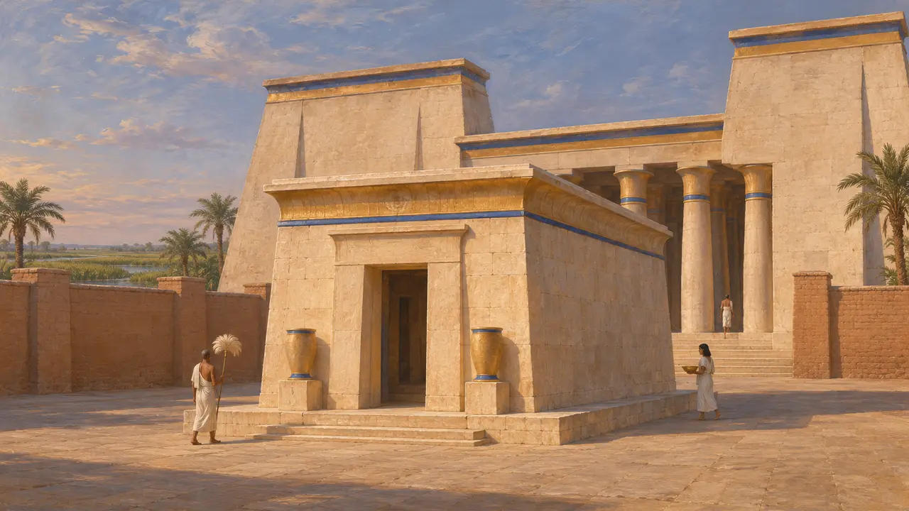
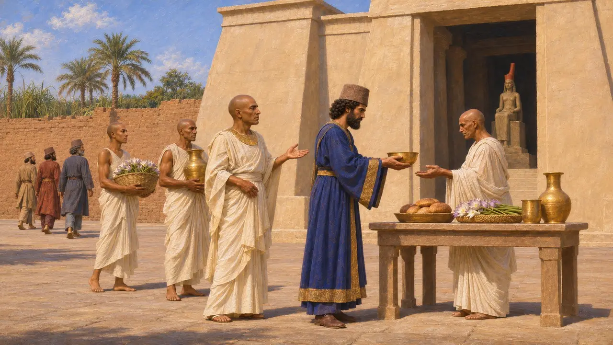
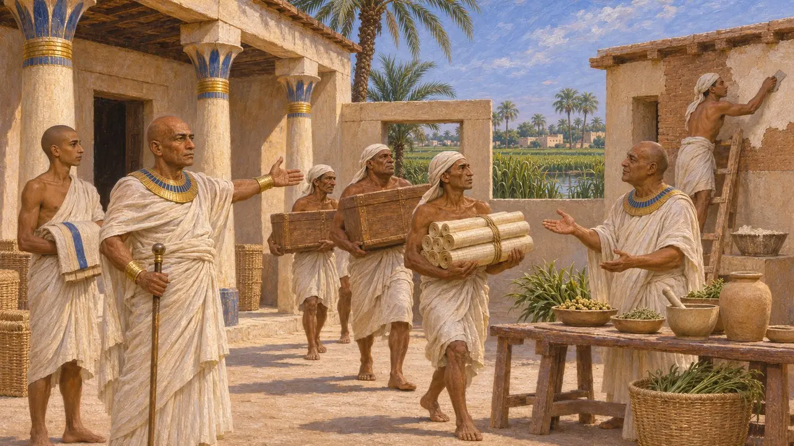
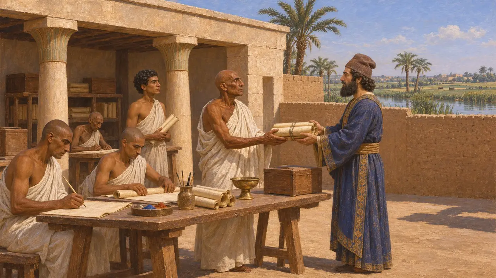
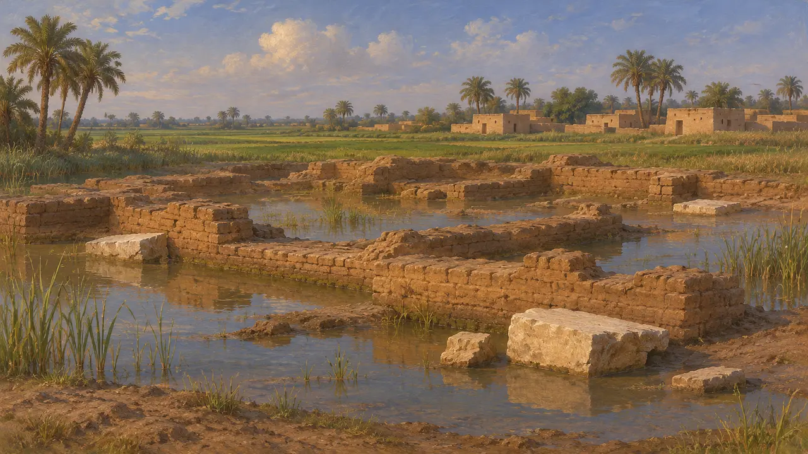

Sais
Batı Delta'da bir Mısır kraliyet kenti ve tapınak merkezi, MÖ 6. yüzyıl
Oyunda: Bölüm 2: Mızrak Taşıyıcı, Bölüm 5: Ferman
Sais, batı Nil Deltası'nda bir kentti ve MÖ 525'teki Pers fethinden önceki son yerli kral soyu olan 26. Hanedan'ın yurduydu. Neith Tapınağı ve Yaşam Evi onu Mısır kült ve bilgeliğinin merkezi yapmıştı. Pers egemenliği altında, Pers krallarına hizmet etmiş bir Mısırlı görevlinin kayıtlarında geçer.
Oyunda: Oyun Sais'ten Kronik kayıtlarında ve Yaşam Evi ile Udjahorresnet yazılarında söz eder. Bir bölüm ya da şahsiyet değildir ve kendine özgü bir mekaniği yoktur.

Saisli kralların yurdu
Antik anlatıHerodotos, Pers istilasından önceki son güçlü kral olan Amasis'in Sais bölgesinden geldiğini söyler ve Amasis'in mezarını Sais'teki Neith Tapınağı'nın kutsal çevresi içine yerleştirir. Bu tapınağı da büyük bir yapı olarak tanımlar. Onun anlatımı Mısır'da kendisine söylenenlere dayanır ve kente bir Yunan yazarın gözüyle bakar.
Herodotus 2.169-175

Tanrıça Neith ve tapınağı
BelgelerdeKambyses ve Dareios'a hizmet etmiş Mısırlı bir görevli olan Udjahorresnet'in heykeli, onun Sais'teki Neith Tapınağı'nda yaptığı işleri kaydeder. Heykel, Kambyses'in Sais'e geldiğini, tapınağı öğrendiğini ve yabancıların oradan çıkarılmasını emrettiğini söyler. Metin, kralı tanrıçayı onurlandıran, onun sunularını ve şenliklerini yeniden kuran biri olarak gösterir.
Statue of Udjahorresnet (Vatican)

Dareios döneminde Yaşam Evi
BelgelerdeAynı heykel, Dareios'un Elam'dayken Udjahorresnet'i Sais'teki Yaşam Evi'ni onarmak üzere Mısır'a geri gönderdiğini kaydeder. Yaşam Evi, kâtipler için kurulmuş bir tapınak kurumuydu ve muhtemelen kutsal yazılarla, tıpla ve ayinlerle ilgileniyordu. Yazıt, Dareios'un bu iş için insan ve gerekli olanakları sağladığını söyler. Bu, bir Mısırlı görevlinin kendi anlatımıdır ve doğal olarak krala yaptığı hizmeti över.
Statue of Udjahorresnet (Vatican)

Yaşam Evi'nin yaptıkları
TartışmalıTarihçiler, Yaşam Evi'nin ne ölçüde bir okul ya da kütüphane, ne ölçüde metinler ve ritüeller için bir tapınak atölyesi olduğu konusunda görüş ayrılığı içindedir. Konuyu sınamaya yetecek kadar kent kalıntısı günümüze ulaşmamıştır. Kimi araştırmacılar Dareios'un bu eylemini Mısır rahip sınıflarını kazanmaya yönelik daha geniş bir politikanın parçası sayar ve bunu Mısır hukukunun sonradan derlendiğine dair geleneklerle ilişkilendirir.
P. Briant, From Cyrus to Alexander, 2002

Alanın bugünkü durumu
BelgelerdeSais, Delta'daki Sa el-Hagar köyünün altında ve çevresinde yer alır. Antik kentten yer üstünde pek bir şey kalmamıştır ve yüksek yeraltı su seviyesi kazıyı zorlaştırır. Egypt Exploration Society'nin de aralarında bulunduğu arkeolojik çalışmalar alanın bazı bölümlerini incelemiştir.
Excavation reports, Sa el-Hagar
Kaynaklar
- Statue of Udjahorresnet (Vatican)
- Herodotus 2.169-175
- P. Briant, From Cyrus to Alexander, 2002
- Excavation reports, Sa el-Hagar